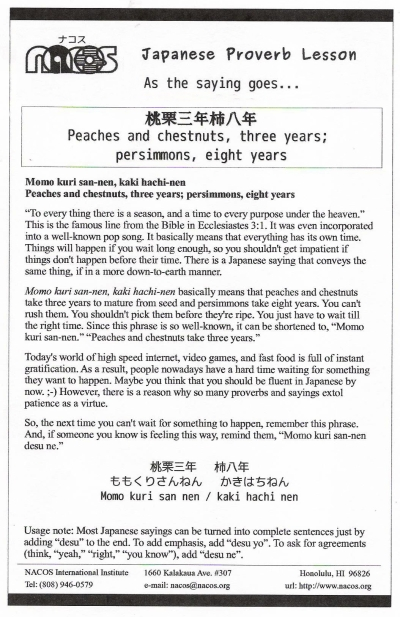

Momo kuri san-nen, kaki hachi-nen
Peaches and chestnuts, three years; persimmons, eight years
“To every thing there is a season, and a time to every purpose under the heaven.” This is the famous line from the Bible in Ecclesiastes 3:1. It was even incorporated into a well-known pop song. It basically means that everything has its own time. Things will happen if you wait long enough, so you shouldn't get impatient if things don't happen before their time. There is a Japanese saying that conveys the same thing, if in a more down-to-earth manner.
Momo kuri san-nen, kaki hachi-nen basically means that peaches and chestnuts take three years to mature from seed and persimmons take eight years. You can't rush them. You shouldn't pick them before they're ripe. You just have to wait till the right time. Since this phrase is so well-known, it can be shortened to, “Momo kuri san-nen.” “Peaches and chestnuts take three years.”
Today's world of high speed internet, video games, and fast food is full of instant gratification. As a result, people nowadays have a hard time waiting for something they want to happen. Maybe you think that you should be fluent in Japanese by now. ;-) However, there is a reason why so many proverbs and sayings extol patience as a virtue.
So, the next time you can't wait for something to happen, remember this phrase. And, if someone you know is feeling this way, remind them, “Momo kuri san-nen desu ne.”
Usage note: Most Japanese sayings can be turned into complete sentences just by adding “desu” to the end. To add emphasis, add “desu yo”. To ask for agreements (think, “yeah,” “right,” “you know”), add “desu ne”.

| © 1995-2013 NACOS International Institute. All Rights Reserved. |